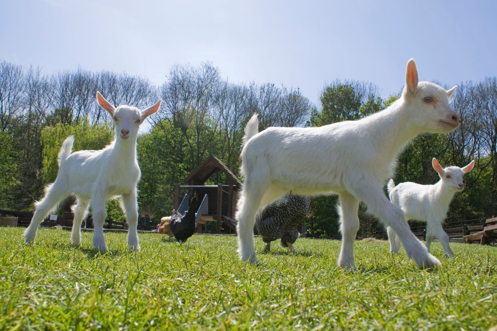
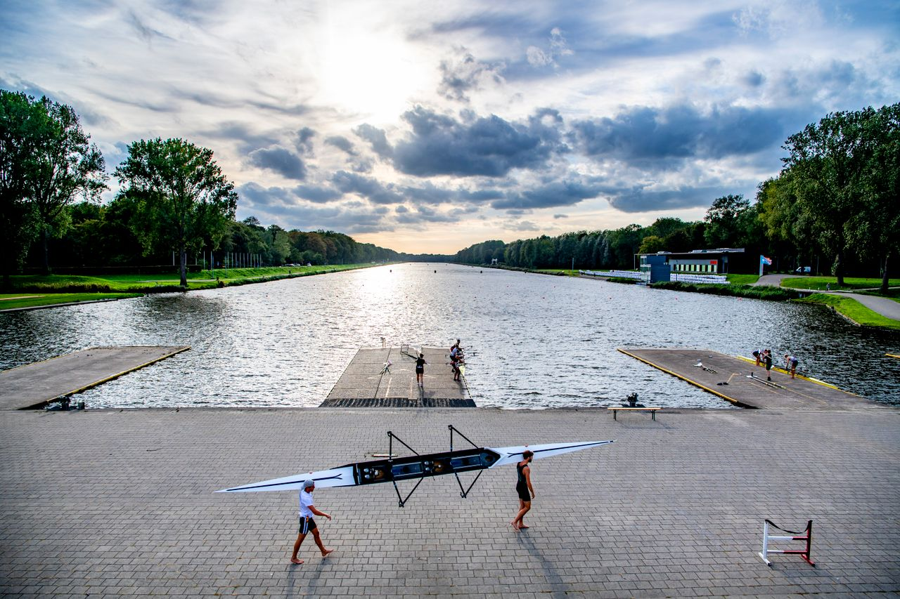
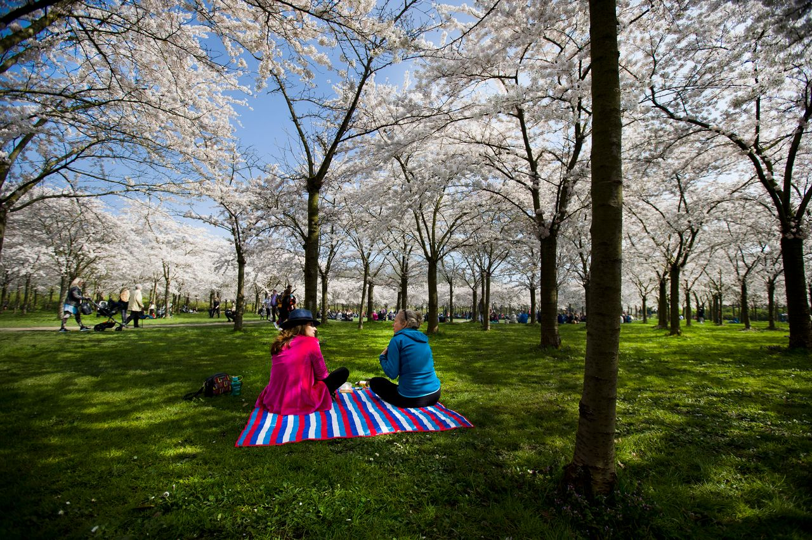
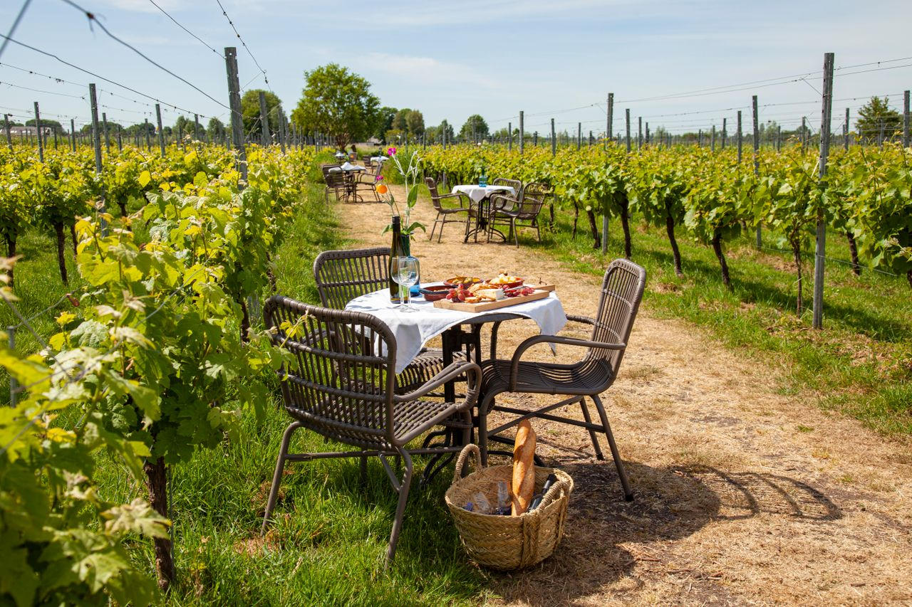
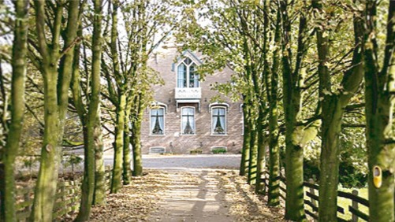
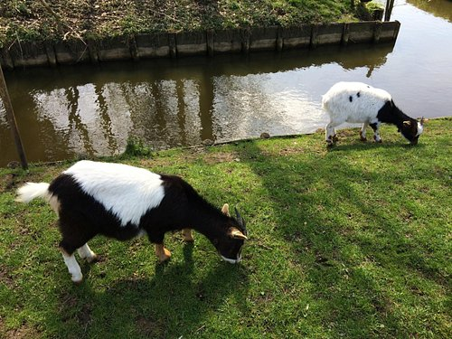
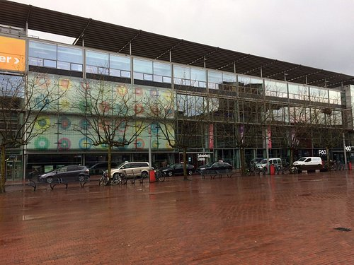
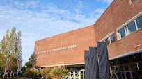

Geitenboerderij
Geitenboerderij Ridammerhoeve is een biologische boerderij waar geitenmelk in de kaaskelder wordt verwerkt tot diverse soorten kaas, yoghurt, karnemelk, boter, kwark en zelfs ijs. Bij de boerderij is ook een moestuin waar biologische groenten en kruiden worden verbouwd. Producten van de boerderij zijn te koop in de boerderijwinkel.
Amsterdamse bos
Hoe oud is de bosbaan in het amsterdamse bos? Op 6 mei 1937 werd de eerste roeiwedstrijd gehouden op de toen 2200 meter lange en 72 meter brede baan. De Bosbaan vormde hiermee een alternatief voor de rivier de Amstel, waar tot dan toe roeiwedstrijden werden gehouden. In 1963 werd de baan verbreed tot 92 meter.
Bloesempark
Tijdens de bloei van de Japanse kers is het Bloesempark in het Amsterdamse Bos op zijn mooist. De bloesem trekt al jaren veel bekijks uit binnen- en buitenland. Lees hier onze tips voor een bezoek. Geniet van de prachtige bloesem in het Amsterdamse Bos. Plan uw bezoek, houd rekening met drukte in het Bloesempark en kom zo veel mogelijk op de fiets en op rustige momenten doordeweeks.
Amsteltuin
Op 1 mei 2019 maakten wij, Annelies Kruijthoff en Douwe Woudstra, de stap van kantoor naar wijngaard de Amsteltuin. We kozen voor de unieke combinatie van buiten werken, in direct contact met verschillende doelgroepen en met een relevante functie voor Amstelveen en omgeving. Dankzij het enthousiaste team van medewerkers en vrijwilligers, lukt het ons om te creëren wat we voor ogen hebben: een plek waar iedereen zich thuis voelt. Elke bezoeker van de Amsteltuin kan rekenen op een gastvrij onthaal. We werken zoveel mogelijk met lokale producten en leveranciers uit de buurt. Ook hergebruiken we materialen en spullen; van fruitkistjes maken wij mooie kasten, fabriekslampen kregen bij ons een tweede leven. Voor alles geldt: we doen het met aandacht, voor jouw plezier.
Clara Maria
In het polderlandschap ten zuidwesten van Amsterdam staat al 170 jaar een prachtige boerderij. Stap binnen en waan u letterlijk terug in de tijd. De kaasboer laat u zien hoe hij zijn kaas maakt en de klompenmaker maakt klompen waar u bijstaat. In de oorspronkelijke stal worden vandaag de dag nog op ambachtelijke wijze verrukkelijke Goudse kaas en traditionele klompen gemaakt. Een paar uurtjes vertoeven bij Clara Maria Cheese Farm & Clog Factory is leuk, leerzaam en bovendien hartstikke lekker. Kom kijken We geven u graag een rondleiding en u kunt onze heerlijke verse kaas proeven. Vier een feestje, schoolreisje of bedrijfsuitje bij Clara Maria. Leer hoe kaas en klompen gemaakt worden door een persoonlijke demonstratie. We vertellen ons verhaal in het Nederlands, maar uiteraard ook in het Engels en Duits. Say cheese.
Speelboederij Elsenhove
Speelboerderij Elsenhove is een combinatie van kennis maken met boerderijdieren, een kinderboerderij én een avontuurlijke, natuurlijke speeltuin. Ook valt er veel te leren over natuur, milieu en duurzaamheid. Speelboerderij Elsenhove is een fijne plek voor kinderen en voor volwassenen. Het is bovendien een uitstekende uitvalsbasis voor fietstochten en wandelingen door recreatiegebied Elsenhove, de Middelpolder, Groengebied Amstelland en Groene Hart.
Schouwburg
Schouwburg Amstelveen is met twee theaterzalen en een filmzaal een van de grotere regionale theaters van Nederland. Jaarlijks bezoeken meer dan 130.000 bezoekers het theater. Of je nu houdt van cabaret, musical, dans, muziek of toneel, bij Schouwburg Amstelveen ben je van harte welkom!
Cobra Museum
Het Cobra Museum voor Moderne Kunst stelt de kunst en het gedachtegoed van de Cobra-beweging centraal. Cobra behoort tot de canon van de kunstgeschiedenis, maar de ‘geest’ van Cobra is nog springlevend. Het belang van een alternatieve cultuur, gebaseerd op internationale solidariteit en creativiteit, is in onze huidige wereld belangrijker dan ooit. Het Cobra Museum verbindt de collectie en de geschiedenis van Cobra dan ook actief aan hedendaagse kunstenaars, moderne kunststromingen en de actualiteit.
Wester-Amstel

Welkom op Wester-Amstel. Onze buitenplaats uit 1662 is een oase van rust, midden in de stad, midden op het platteland. Op een steenworp afstand van het drukke Amsterdamse stadsleven geniet u van het buitenleven op één van de mooiste plekjes van het groene Amstelland.